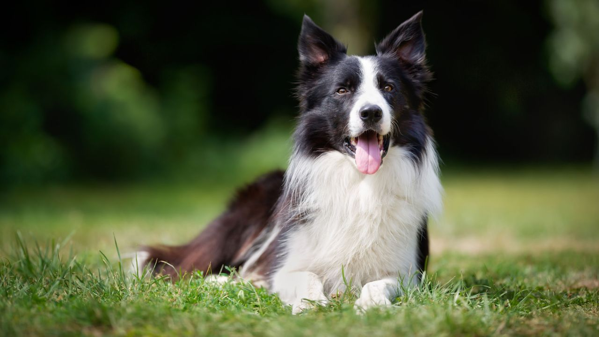
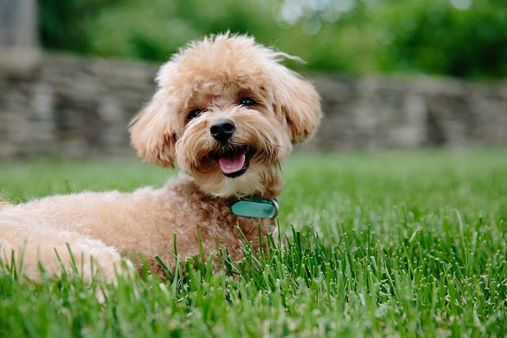
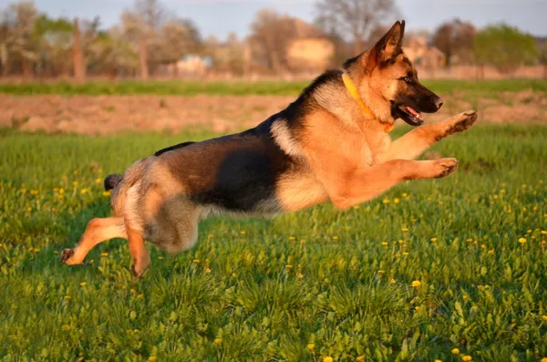
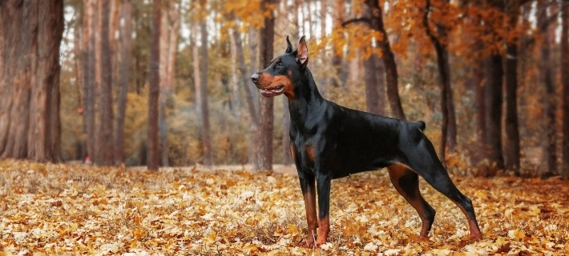

Border Collie
Il Border Collie è considerato il cane più intelligente
del mondo dalla lista di Stanley Coren. Per molte
generazioni, il Border Collie ha svolto il ruolo di
pastore, cane da guardia e animale da utilizzare per
la pet therapy. Fortunatamente, oggigiorno molte
persone godono della compagnia di questo cane che
è capace di ricordare un grande numero di ordini.
Si conosce il caso di Chaser, un Border Collie
capace di identificare 1.022
comandi differenti.

Barboncino
Il Barboncino ha molta energia ed è molto bravo a
imparare comandi e giochetti di ogni tipo. In linea
di massima si parla di un cane molto socievole che
è sempre disposto a compiacere il suo padrone, che
ama e rispetta fortemente. Hanno un carattere molto
affettuoso, per questa ragione è uno dei cani più
amati e adottati in tutto il mondo. Inoltre, il
Barbone si comporta molto bene con i bambini
piccoli con i quali passa un sacco di tempo
giocando e realizzando dei movimenti particolari
in cambio di un saporito snack.

Pastore Tedesco
Al terzo posto troviamo il Pastore Tedesco, un cane
sensibile, intelligente e intuitivo. Per molte
generazioni è stato riconosciuto l'alto standard
intellettivo, fisico e cognitivo di questo esemplare.
Purtroppo questo cane ha delle predisposizioni
genetiche che lo espongono al rischio di alcune
malattie, tra le quali c'è la displasia dell'anca.

Golden Retriver
Nella lista dei 5 cani più intelligenti al mondo non
poteva di certo mancare una fantastica razza: il Golden
Retriever. Questo animale non solo è il quarto per
intelligenza, vanta anche una bellezza spettacolare
ed è molto affabile e giocherellone. È un cane energico
che beve una grande quantità d'acqua per mantenersi in
forma. È una delle razze più popolari al mondo ed è
molto facile scoprirne il perché: è un cane eccezionale,
che se ben educato, si comporterà benissimo con gli
altri animali e anche con i bambini. Probabilmente è
per questa ragione che è stato scelto come il cane
adeguato per fare terapia con i bambini autistici.
Doberman Pinscher
Per ultimo, ma non meno importante, troviamo il
Dobermann Pinscher: uno dei cani più rapidi quando si
tratta di imparare ordini e nell'addestramento in
generale. Nonostante la cattiva reputazione che ha per
molte persone, in realtà si tratta di una razza
abbastanza tranquilla e tollerante con tutti i membri
della famiglia, inclusi i più piccoli.
